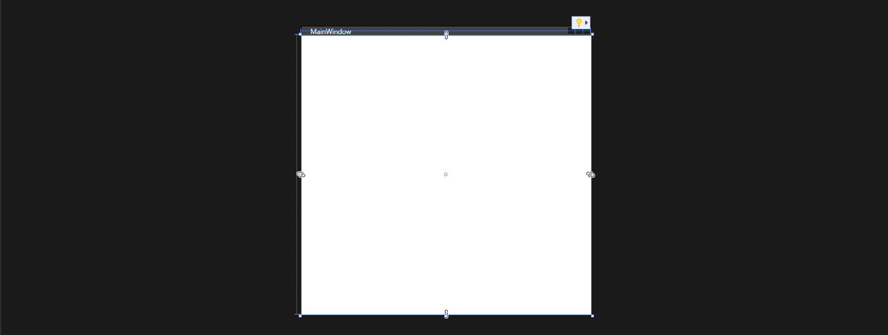

Giriş
WPF Nedir?
WPF [ Windows Presentation Foundation ( Windows Sunuum Temeli ) ], grafik altyapısını XAML kodlama sistemini kullanılarak pencere tasarlama sağlar.
WPF, normal bir form tasarlamak yerine daha modern ve CSS gibi Web teknolojileriyle yararlanabilir. Pencere sistemi GDI+ yerine DirectX kullanılır. Ayrıca direk GPU'ya erişerek daha proformanslı bir pencere oluşturulabilir.
Proje Oluşturma
Proje oluşturmak için Visual Studio'yu açalım. Yeni bir proje oluştur diyelim. Arama kısmına "WPF" yazalım. "WPF Uygulaması" yazan projeyi oluşturulım. Ve ta da... Oluştu.
Arayüz
GUI

Bu kısım, XAML kısımında yazdığımız kodların GUI karşılığını görürüz.
XAML Yazma
Bu kısım, XML kodlarımızı yazdığımız kısım.
Kaynakça